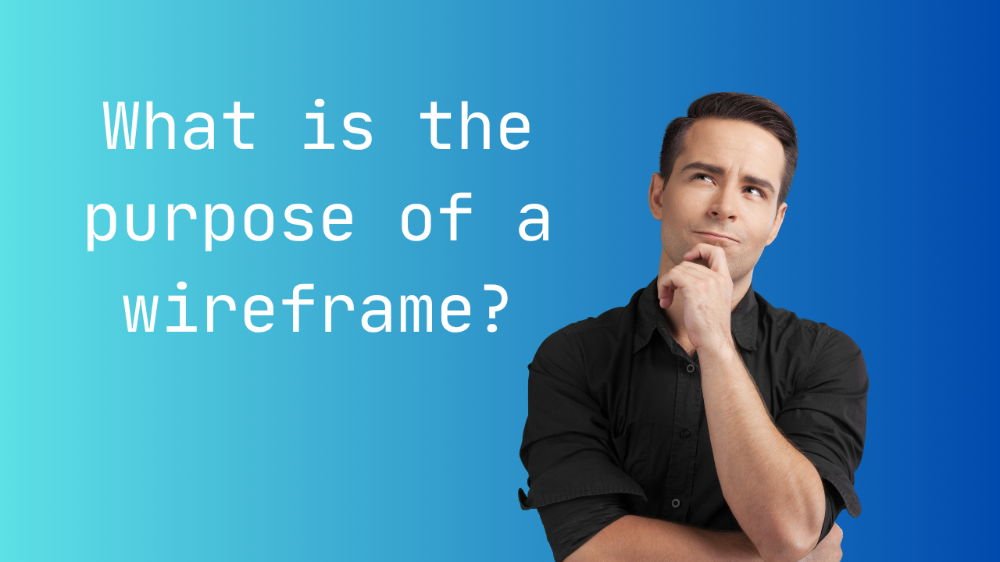

What is a Wireframe?
A wireframe is a simple visual guide used to plan the layout of a webpage or app. It focuses on structure rather than design, showing where elements like headers, navigation, content, and images will be placed. Wireframes help developers and designers understand how a page will work before adding colors, images, or styling.
Read more